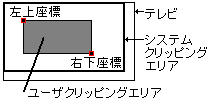
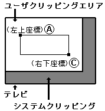
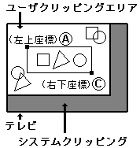
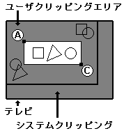
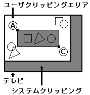
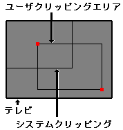

★HARDWARE Manual
★VDP1ユーザーズマニュアル
★第７章 コマンド
★HARDWARE Manual
★VDP1ユーザーズマニュアル
★第７章 コマンド
|  | |||||||||||||||
| 【注】 | は無視されます(don't care) |
| (a) ユーザクリッピング設定 | |
 | XA≦XC、YA≦YCになるように設定してください。 |
| (b) 誤ったユーザクリッピング設定 | |
| XC＜XA、YA＜YCに設定された場合の動作は保証されません。 | |
| (a) ユーザクリッピング無効 | |
 | ユーザクリッピングが無効なので、 システムクリッピング領域の内側が描画されます。 |
| (b) 内側描画モード | |
 | ユーザクリッピングが有効で内側描画モードのとき、 ユーザクリッピング領域の内側が描画されます。 |
| (c) 外側描画モード | |
 | ユーザクリッピングが有効で外側描画モードのとき、 システムクリッピング領域の外側との間の領域が描画されます。 |
| (c) 設定禁止 | |
 | ユーザクリッピング領域は必ずシステムクリッピング領域の内側に設定してください。 外側に設定した場合の動作は保証されません。 |
★HARDWARE Manual
★VDP1ユーザーズマニュアル
★第７章 コマンド